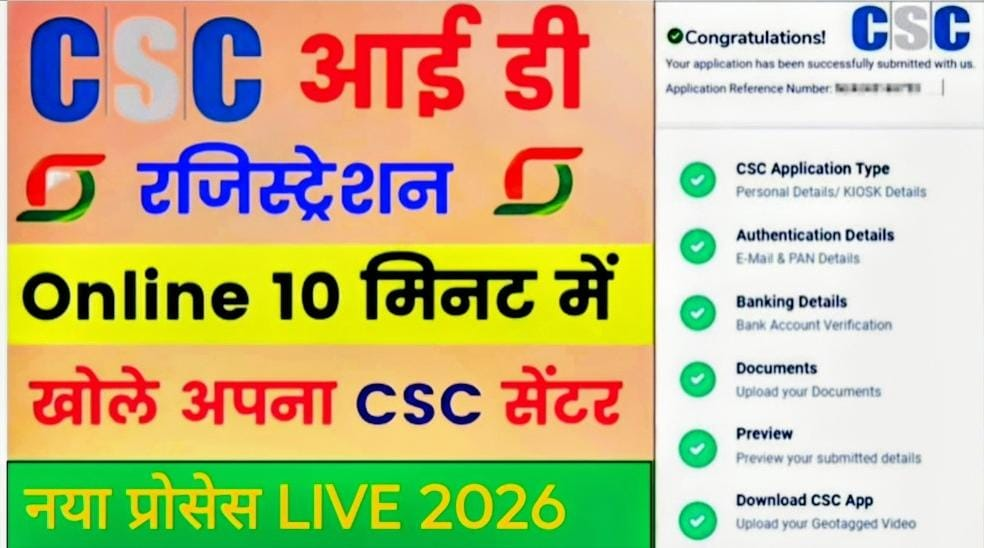

CSC VLE New Registration 2026: Apply Online, Eligibility, Documents & Full Process

भारत सरकार की Digital India Initiative के तहत CSC (Common Service Center) एक महत्वपूर्ण पहल है, जिसका उद्देश्य ग्रामीण और शहरी क्षेत्रों में डिजिटल सेवाओं को पहुँचाना है। CSC के माध्यम से लोग सरकारी और गैर-सरकारी सेवाओं का लाभ अपने नजदीकी केंद्र से ले सकते हैं।
यदि आप भी अपना खुद का डिजिटल सेवा केंद्र खोलना चाहते हैं, तो आपको CSC VLE (Village Level Entrepreneur) बनना होगा। इस लेख में हम आपको CSC VLE New Registration 2026 की पूरी प्रक्रिया, योग्यता, दस्तावेज, और कमाई के बारे में विस्तार से बताएंगे।
📄 CSC VLE क्या होता है?
CSC VLE (Village Level Entrepreneur) वह व्यक्ति होता है जो CSC केंद्र का संचालन करता है। VLE एक तरह का डिजिटल उद्यमी होता है, जो अपने क्षेत्र में नागरिकों को विभिन्न सेवाएं प्रदान करता है जैसे:
- ऑनलाइन फॉर्म भरना
- आधार सेवाएं
- बैंकिंग सेवाएं (AEPS)
- बिजली बिल भुगतान
- सरकारी योजनाओं की जानकारी
👉 VLE बनकर आप एक स्थायी आय का स्रोत बना सकते हैं।
🎯 CSC VLE बनने के फायदे
CSC VLE बनने के कई फायदे हैं, जिनमें शामिल हैं:
- खुद का डिजिटल बिजनेस शुरू करने का मौका
- सरकारी सेवाओं के माध्यम से नियमित आय
- ग्रामीण क्षेत्रों में रोजगार का अवसर
- बैंकिंग, बीमा और पेंशन सेवाओं से अतिरिक्त कमाई
- Digital India Mission का हिस्सा बनना
CSC Registration के लिए आवश्यक योग्यता
CSC ID लेने के लिए आपको निम्नलिखित योग्यताओं को पूरा करना होगा:
- आवेदक की आयु कम से कम 18 वर्ष होनी चाहिए
- आधार कार्ड होना अनिवार्य है
- मोबाइल नंबर आधार से लिंक होना चाहिए
- कंप्यूटर और इंटरनेट का बेसिक ज्ञान होना चाहिए
- TEC Certificate होना जरूरी है
- एक स्थायी स्थान (shop/office) होना चाहिए
CSC Registration के लिए जरूरी दस्तावेज
👉 आवेदन करते समय ये दस्तावेज तैयार रखें:
- आधार कार्ड
- PAN कार्ड
- बैंक पासबुक
- पासपोर्ट साइज फोटो
- मोबाइल नंबर और ईमेल ID
- TEC Certificate
- दुकान/स्थान की फोटो
🛠️ CSC VLE New Registration 2026 कैसे करें?
CSC ID के लिए आवेदन करना अब पहले से आसान हो गया है। नीचे दिए गए स्टेप्स को फॉलो करें:
सबसे पहले CSC Registration की आधिकारिक वेबसाइट खोलें।
👉 Homepage पर “Apply” या “New Registration” विकल्प पर क्लिक करें।
👉 यहाँ आपको अपना TEC Number डालना होगा, जो अनिवार्य है।
👉 आधार से जुड़े मोबाइल नंबर पर OTP आएगा, उसे verify करें।
👉 अब आपको अपनी पूरी जानकारी भरनी होगी:
• नाम और पता
• बैंक डिटेल
• शिक्षा
• व्यवसाय जानकारी
👉 सभी आवश्यक दस्तावेज अपलोड करें (PDF/JPG format में)
👉 सभी जानकारी सही होने पर submit कर दें और application number नोट कर लें।
इसके फायदे:
- CSC Registration कर सकते हैं
- Digital services provide कर सकते हैं
- Online work से income generate कर सकते हैं
- Government schemes में काम कर सकते हैं
⚠️ महत्वपूर्ण बातें (Important Tips)
👉 आवेदन करते समय ध्यान रखें:
- सभी जानकारी सही भरें
- Documents clear और valid हों
- Official website से ही apply करें
- किसी एजेंट या फर्जी वेबसाइट से बचें
- TEC Certificate पहले से तैयार रखें
| CSC Registration | Registration |
|---|---|
| Check your Application status | Click here |
| Official Website | Click here |
| TEC Certificate | Registration |
| Facebook Page | WhatsApp Channel |
📝 निष्कर्ष (Conclusion)
CSC VLE New Registration 2026 उन लोगों के लिए एक शानदार अवसर है जो डिजिटल सेवाओं के क्षेत्र में अपना करियर बनाना चाहते हैं। यह न केवल आपको रोजगार देता है, बल्कि आपको अपने क्षेत्र में लोगों की मदद करने का अवसर भी देता है। यदि आप सही तरीके से आवेदन करते हैं और सभी आवश्यक शर्तों को पूरा करते हैं, तो आप आसानी से CSC ID प्राप्त कर सकते हैं और अपना डिजिटल सेवा केंद्र शुरू कर सकते हैं।
👉 इसलिए यदि आप एक स्थिर और बढ़ती हुई आय का स्रोत चाहते हैं, तो CSC VLE बनना आपके लिए एक बेहतरीन विकल्प हो सकता है। 🚀